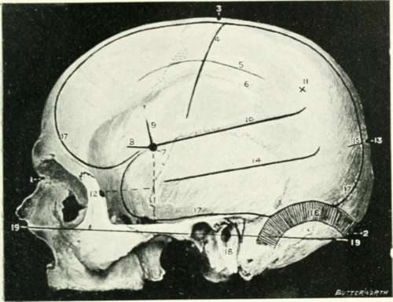
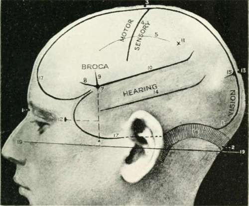
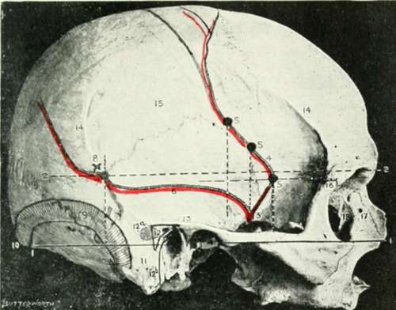
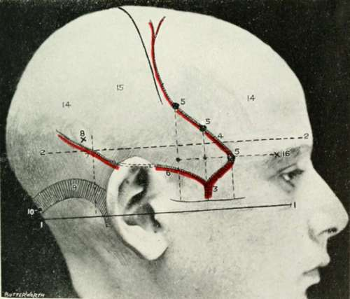

Chapter I. The Head And Neck
Description
This section is from the book "Landmarks And Surface Markings Of The Human Body", by Louis Bathe Rawling. Also available from Amazon: Landmarks and Surface Markings of the Human Body.
Chapter I. The Head And Neck
Cranio-Cerebral Topography
Only those surface markings will be given which are of practical value, and, as far as possible, each landmark will be rendered independent of any other, as by such means any given structure can be rapidly depicted on the surface, the important question of time and of space rendering the more complicated systems, in which it is necessary to map out a network of intersecting lines in order to fix the position of any single structure, of little surgical value. It is necessary, however, to recognize first certain important bony points, etc.
The nasion, situated at the base of the nose at the (Fig. I, 1.) central point of the naso-frontal suture.
The inion, or external occipital protuberance, (Fig. I, 2.) a projection, variable in size, which can be readily felt on the occipital bone, immediately above the nuchal furrow.
A line uniting these two points over the vertex of the skull corresponds in direction to the mesial longitudinal fissure of the brain, to the upper attached margin of the falx cerebri, and to the superior longitudinal venous sinus. This sinus originates in the region of the foramen caecum, just anterior to the crista galli, and broadens out rapidly as it passes backwards towards the internal occipital protuberance, which lies at the same level as the previously mentioned external protuberance. It then turns sharply to the right, forming the right lateral sinus. The left lateral sinus derives its blood mainly from the straight sinus, which receives, at the anterior margin of the tentorium cerebelli, the great vein of Galen, the main efferent trunk of the deep nuclear cerebral veins. The line drawn as above from the nasion to the inion also corresponds in direction to the occasionally persistent metopic suture between the two halves of the frontal bone, and to the sagittal suture between the two parietal bones.
The frontal bone is separated off from the two parietal bones by the coronal suture, and the point of junction of the coronal and sagittal sutures is known as the bregma, the site of the foetal anterior fontanelle, an opening which is normally closed by the end of the second year. Between the parietal and occipital bones the lambdoid suture lies; and at the junction of the sagittal and lambdoid sutures the posterior fontanelle is situated,closed at or soon after birth. The point of junction of the last two Fig. I, 13, sutures is known as the lambda. This point lies about 2 1/2 inches above the inion or external occipital protuberance. About 1 inch from its posterior superior angle, and close to the sagittal suture, the parietal bone is perforated by a small foramen, and a line uniting the two foramina crosses the sagittal suture at a point known as the obelion. The parietal bone is outwardly bulged at (Fig. I, 11.) a point rather above its centre, forming the parietal eminence, especially marked in the foetal skull, and indicating the point at which the single ossific nucleus makes its appearance.
Turning now one's attention to the lateral aspect of the skull, the inferior temporal crest should be examined. Fig. I, 6. This crest crosses the parietal bone rather below the junction of the middle and lower thirds, cutting off the vault proper above from the temporal fossa below. The ridge is often so feebly developed in this region that it may be necessary to verify its position by tracing it backwards from the region of the external angular frontal process, at which level the crest is always well marked. The temporal muscle arises from the inferior temporal crest and from the temporal fossa below, whilst the overlying fascia, the temporal fascia, gains attachment to the superior temporal crest (Fig. I, 5.—) a feebly developed ridge which runs above and parallel to the inferior crest. To avoid confusion, it is perhaps necessary to add that the inferior temporal crest is quite distinct from the infratemporal crest, which forms the lower margin of the temporal fossa, and separates off that fossa from the zygomatic fossa.
The external angular frontal process articulates with the frontal process of the malar bone, and the articulation between the two processes is easily felt at the upper and outer border of the orbital cavity. (Fig. II, 16.)
The malar tubercle, a small prominence to be felt along the posterior border of the frontal process of the malar bone, a short distance below the fronto-malar suture. (Fig. I, 12.)
The zygomatic process of the temporal bone should be traced backwards towards the ear, and an examination of the skull will show that this process divides in front of the ear into three roots, the anterior merging into the eminentia articularis, the middle helping in the formation of the post-glenoid process, whilst the posterior or upper root (Fig. II,13,14.) sweeps backwards above the external auditory (Fig. I, 17.) meatus to become continuous with the supra-meatal and supramastoid crests, and to blend with the posterior curved end of the temporal crest. The suprameatal crest is of special surgical importance, as it forms the upper boundary of Macewen's suprameatal triangle, and also indicates fairly accurately the lower level of the cerebrum in this situation.
The lateral sinus describes a gentle curve from the (Fig. I, 16.) external occipital protuberance to the upper (Fig. II, 9.) and posterior part of the base of the mastoid process, finally curving downwards towards, though not reaching to, the apex of that process. The degree of upward curve is subject to a good deal of variation, and the sinus frequently presents a lesser upward convexity than was the case in the specimen from which the illustration was taken.
The lower limit of the cerebrum can, with sufficient (Fig. I, 17.) accuracy, be mapped out in the following manner: A point is taken in the median antero-posterior line about 1/2 inch above the nasion, and from this point a line is drawn outwards which lies about 1/2 inch above, and follows the curve of the upper border of the orbit. This line is carried backwards as far as the level of the external angular frontal process, then curving upwards and backwards towards the Sylvian point (see next page). The temporo-sphenoidal lobe sweeps now downwards and forwards towards the posterior border of the malar bone, and then lies practically on a level with the upper border of the zygoma. At and behind the ear the cerebrum lies flush with the suprameatal and supra-mastoid crests, and subsequently follows the curve of the lateral sinus from the base of the mastoid process to the external occipital protuberance.
Fig. I. Cranio-Cerebral Topography
1. The nasion.
2. The inion.
3. The mid-point between nasion and inion.
4. The Rolandic fissure.
5. The superior temporal crest.
6. The inferior temporal crest.
7. The Sylvian point.
8. The anterior horizontal limb of the Sylvian fissure.
9. The vertical limb of the Sylvian fissure.
10. The posterior horizontal limb of the Sylvian fissure
11. The parietal prominence.
12. The malar tubercle.
13. The lambda.
14. The first temporo-sphenoidal sulcus.
15. The external parietooccipital sulcus.
16. The lateral sinus.
17. The level of the base of the cerebrum. 18. The external auditory meatus.
19. Reid's base line.
Fig. II. Cranio Cerebral Topography
1. Reid's base line.
2. A line parallel to the above at the level of the supraorbital margin.
3. The middle meningeal artery.
4. The anterior branch.
5. The three sites for trephination.
6. The posterior branch.
7. The site for trephination.
8. The point for trephining to reach the descending horn of the lateral ventricle.
9. The lateral sinus.
10. The inion.
11. The mastoid process.
12. Macewen's suprameatal triangle. 12a. The mastoid antrum.
12b. The facial nerve.
13. The suprameatal and supramastoid crests
14. The temporal crest.
15. The temporal fossa.
16. The external angular frontal process.
17. The tendo-oculi attachment.
18. The lachrymal groove.
The lateral sinus is, to a large extent, walled in by the tentorium cerebelli, a membrane separating the cerebrum and cerebellum one from the other. The sinus curve, therefore, corresponds not only to the position of the lateral sinus, but also represents the outer attachment of the tentorium cerebelli, and the interval between the cerebrum above and the cerebellum below.
Reid's base line (Fig. I, 19, Fig. Fig. II, 1.) is drawn backwards from the lower border of the orbit to the middle of the external auditory meatus, and, when further produced, line will be found to fall just below the level of the inion, and to lie almost entirely below the level of the lateral sinus. This line is utilized by some surgeons in trephining the skull, distances being measured along this line and points taken above or below, according to the seat of the lesion.
The Sylvian point represents the site of divergence of the three limbs of the Sylvian fissure. (Fig. I, 7.) It lies 1 1/4 inches behind the external angular frontal process, and 1 1/2 inches above the upper border of the zygoma. The main posterior horizontal limb of the Sylvian fissure passes backwards and upwards from the Sylvian point to a second point situated 3/4 inch below the most prominent part of the parietal bone. (Fig. I, 10,11.)
The vertical limb is directed upwards for about 3/4 inch, whilst the anterior horizontal limb passes forwards for about the same distance. (Fig. I, 8,9.) The Sylvian point corresponds also to the anterior pole of the island of Reil and to the middle cerebral artery, as that vessel lies deeply embedded in the anterior part of the Sylvian fissure.
To mark out the external parieto-occipital fissure (Fig. I, 12.) and the first temporo-sphenoidal or parallel sulcus (Fig. I, 15,) it is necessary to find two bony points—the malar tubercle and the lambda. A line uniting these two points corresponds in its posterior part to the external parieto-occipital sulcus, and in its middle third to the first temporo-sphenoidal sulcus.
Continue to: